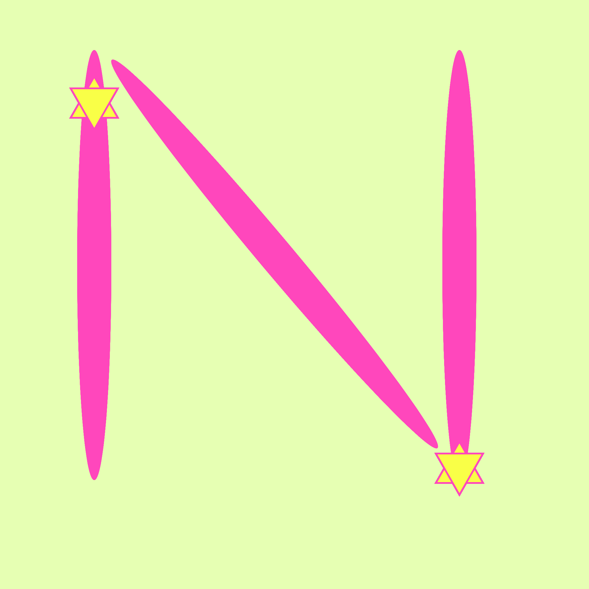

Sketch 10
What I made with p5 -- Day 10!

function setup() {
createCanvas(1000, 1000);
background(230, 255, 179);
angleMode(DEGREES);
}
function draw() {
noStroke();
if (mouseIsPressed === true) {
push();
ellipse(160, 450, 58, 730);
fill(255, 71, 188);
push();
rotate(320);
ellipse(80, 630, 58, 860);
fill(255, 71, 188);
pop();
push();
ellipse(780, 450, 58, 730);
fill(100);
pop();
} else {
stroke(255, 71, 188);
strokeWeight(3);
fill(249, 255, 71);
triangle(120, 200, 160, 130, 200, 200);
stroke(255, 71, 188);
strokeWeight(3);
fill(249, 255, 71);
triangle(120, 150, 160, 220, 200, 150);
stroke(255, 71, 188);
strokeWeight(3);
fill(249, 255, 71);
triangle(740, 820, 780, 750, 820, 820);
stroke(255, 71, 188);
strokeWeight(3);
fill(249, 255, 71);
triangle(740, 770, 780, 840, 820, 770);
}
print(mouseIsPressed);
}
BACK TO MENU